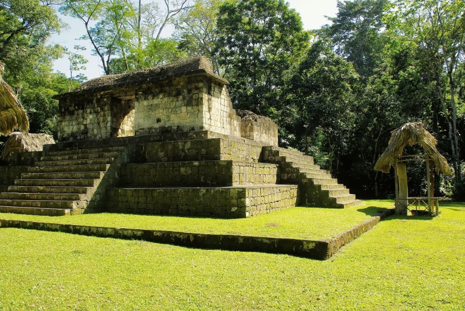
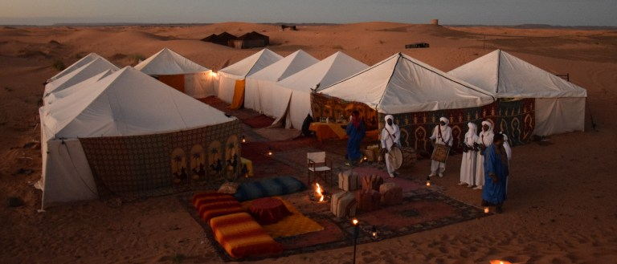
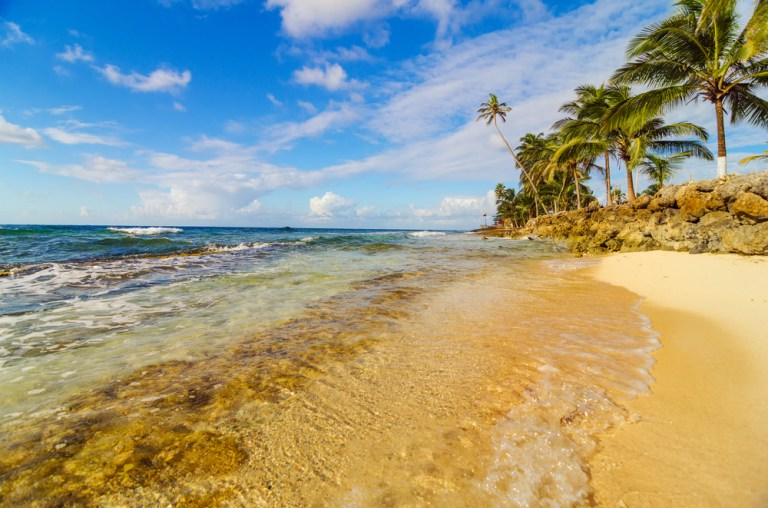

Realize seu sonho! Viaje Conosco!
Guatemala
A Guatemala, antes habitada pelos Maias, é o terceiro maior país da América Central, e foi colonizado pelos espanhóis. Cheio de histórias e belezas naturais, as paisagens são repletas de vulcões, cavernas, lagos e bosques e ainda abriga o legado da civilização pré-colombiana. É um país pequeno, e ainda muito pouco conhecido no cenário turístico mundial. Isso faz com que uma visita lá seja muito mais autêntica, repleta de contato com a população local, que ainda está começando a se acostumar com o turismo. Um roteiro de Guatemala clássico passa pelos sítios arqueológicos de Iximché, uma das antigas capitais maias, e tem passagem obrigatória pelo Lago Atitlán, conhecido por ser um dos mais belos do mundo, com seu três vulcões e pitorescos povoados indígenas. Já um roteiro mais aventura é enfrentar o trekking até El Mirador. Conheça este país ainda pouco explorado e com muitas histórias para contar!
Nova Zelândia

Conhecido como o país da aventura, a Nova Zelândia oferece passeios para todos os gostos. Suas praias, picos nevados, vulcões ativos, gêiseres, glaciares, rios de água transparente e lindos lagos tornam um pacote de viagens para Nova Zelândia uma experiência completa de ecoturismo.
Marrocos
Viajar no Marrocos é uma experiência única. Existem várias opções de roteiros para o Marrocos, que por ser muito próximo da Europa faz do país um destino fácil de viajar. As opções vão desdo uma viagem apenas para as Cidades Imperiais, passando pela experiência de acampar em tendas beduínas no Saara, e pode até virar uma grande aventura, escalando o Atlas e conquistando o ponto mais alto do norte africano. Vivencie uma incrível mistura de tradição com uma recente modernização.
Colombia
Uma terra onde você encontrará todos os climas, com litoral, selvas, montanhas, rios, desertos e uma incrível biodiversidade. Viajar para Colômbia é uma maravilhosa surpresa que você vai querer repetir várias vezes! Ao mesmo tempo em que a Floresta Amazônica cobre mais da metade do território nacional, a Cordilheira dos Andes se impõe diante das belíssimas praias caribenhas. E como diz o famoso slogan do país, Colômbia: o risco é querer ficar. Conheça a Colômbia o ano todo! O roteiro só com Cartagena das Índias ou com Cartagena e San Andrés em uma mesma viagem são algumas boas opções!